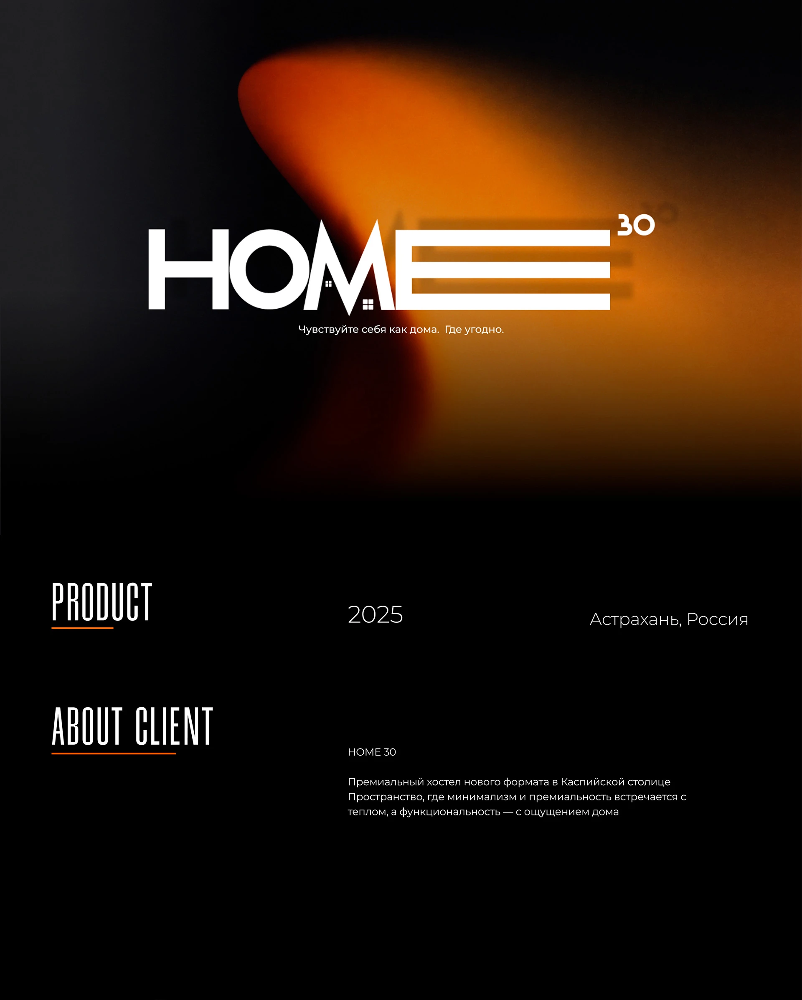
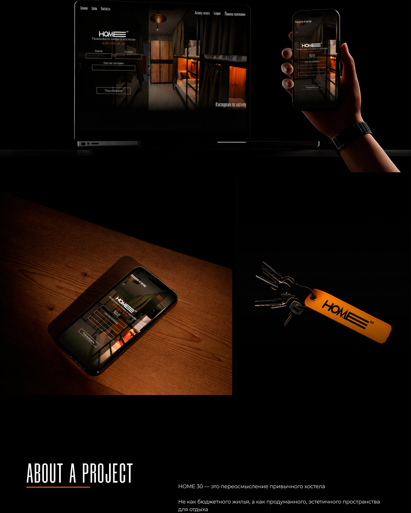
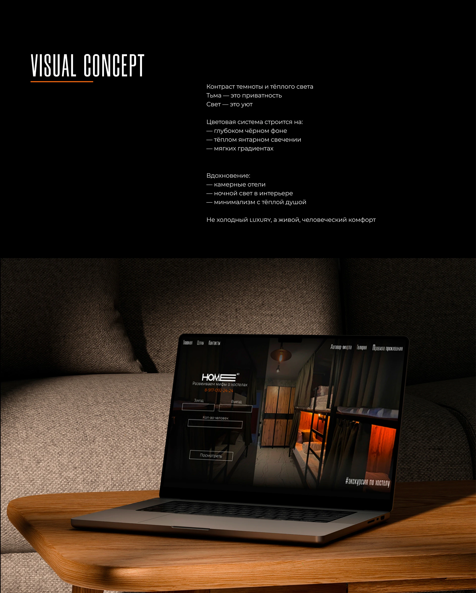
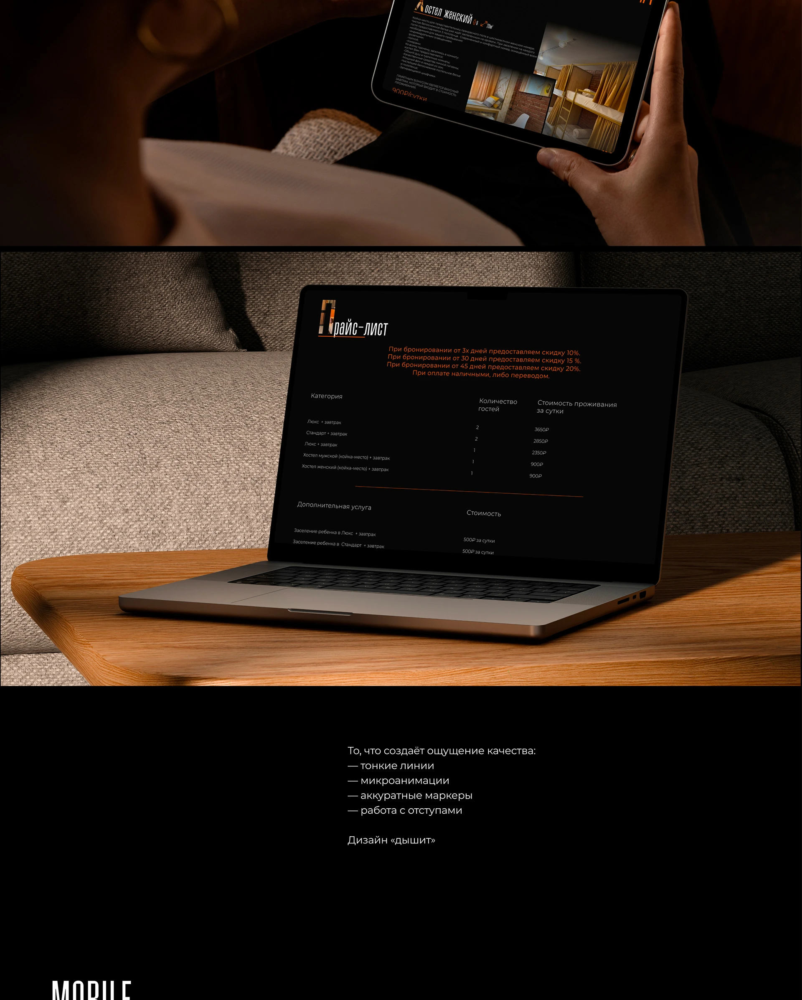
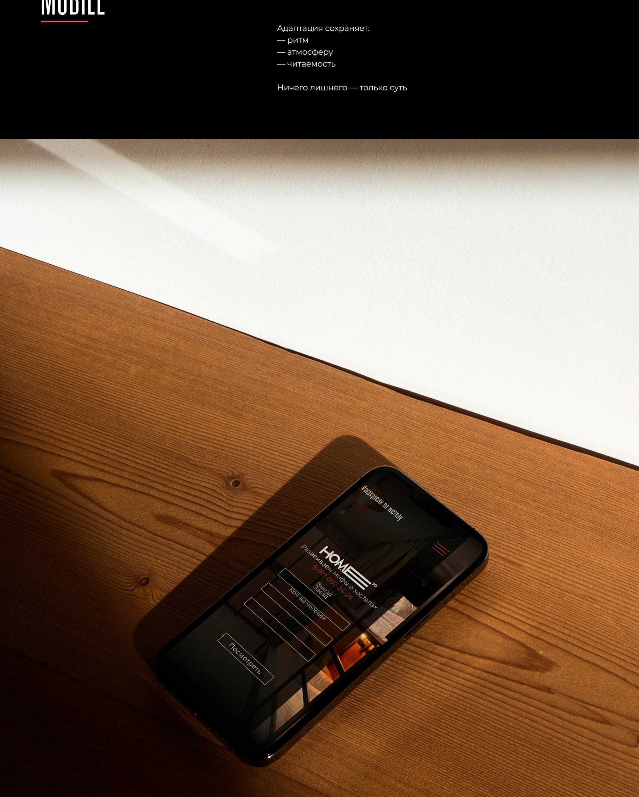
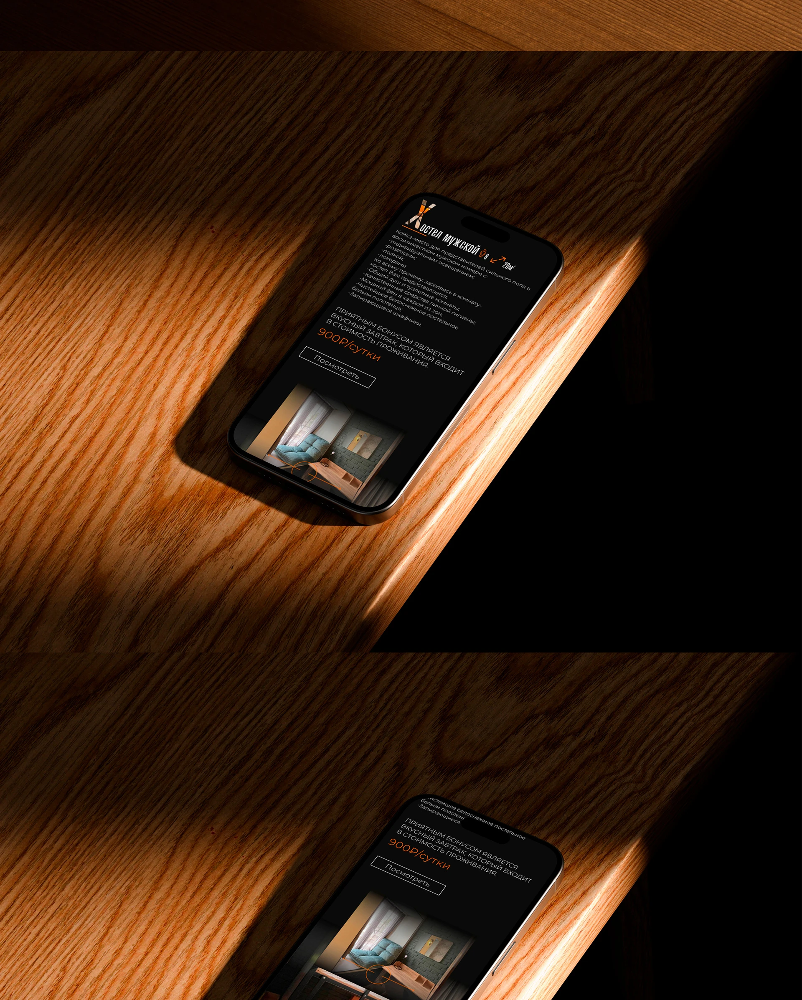
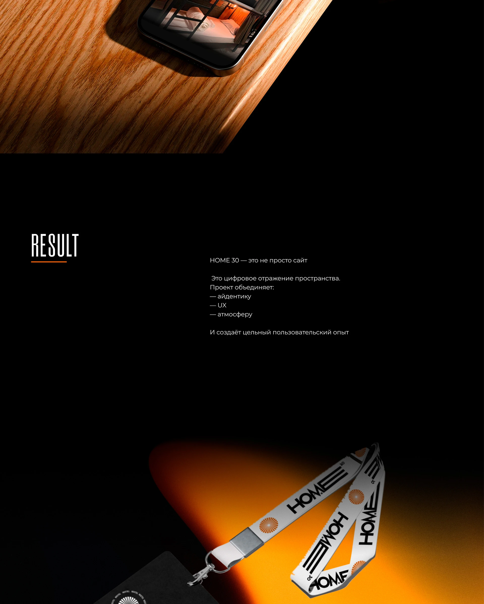
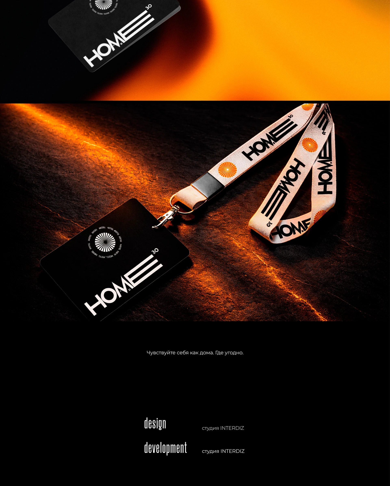

2025
Астрахань, Россия
HOME 30
Премиальный хостел нового формата в Каспийской столице. Пространство, где минимализм и премиальность встречаются с теплом, а функциональность — с ощущением дома.
HOME 30 — это переосмысление привычного хостела. Не как бюджетного жилья, а как продуманного, эстетичного пространства для отдыха.
Проект включает:
- разработку логотипа
- визуальную айдентику
- дизайн сайта
- структуру пользовательского опыта
Задача — создать ощущение бутик-отеля в формате хостела.
Большинство хостелов визуально перегружены и не вызывают доверия. Они не транслируют комфорт, приватность и стиль.
Мы хотели изменить это восприятие. Создать пространство, где:
- хочется остаться
- безопасно
- эстетика работает на эмоцию
HOME — это чувство
30 — это место
Бренд строится вокруг ощущения личного пространства внутри общего. Ключевая мысль: «Даже вне дома ты всё равно можешь быть дома».
Логотип работает как архитектурный элемент.
Он:
- устойчив
- легко масштабируется
- остаётся читаемым в любых носителях
Типографика подчёркивает премиальность без лишнего декора.
Контраст темноты и тёплого света.
Тьма — это приватность.
Свет — это уют.
Цветовая система строится на:
- глубоком чёрном фоне
- тёплом янтарном свечении
- мягких градиентах
Вдохновение:
- камерные отели
- ночной свет в интерьере
- минимализм с тёплой душой
Не холодный luxury, а живой, человеческий комфорт.
Интерфейс — это продолжение пространства.
Мы отказались от перегруженности в пользу:
- воздуха
- крупных блоков
- фокусных точек
Сайт не отвлекает — он направляет.
Первое впечатление — атмосфера.
Пользователь сразу погружается в пространство:
- затемнённый фон
- акцентный свет
- лаконичный call-to-action
Минимум слов — максимум ощущения.
Простая и предсказуемая структура:
- чёткие разделы
- отсутствие лишних действий
- быстрый доступ к бронированию
UX построен на интуиции.
Выбор через эмоцию, а не через список. Каждый тип номера подан как отдельный сценарий проживания.
То, что создаёт ощущение качества:
- тонкие линии
- микроанимации
- аккуратные маркеры
- работа с отступами
Дизайн «дышит».
Адаптация сохраняет:
- ритм
- атмосферу
- читаемость
Ничего лишнего — только суть.
HOME 30 — это не просто сайт.
Это цифровое отражение пространства. Проект объединяет:
- айдентику
- UX
- атмосферу
И создаёт цельный пользовательский опыт.
Посмотреть оригинальную презентацию









